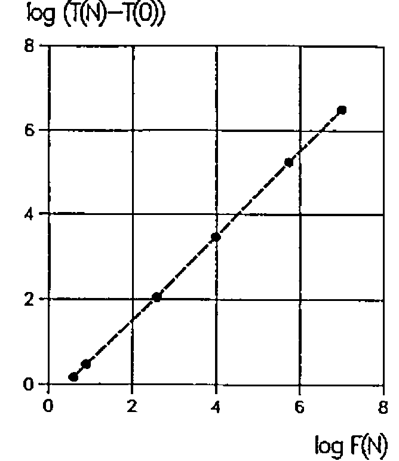
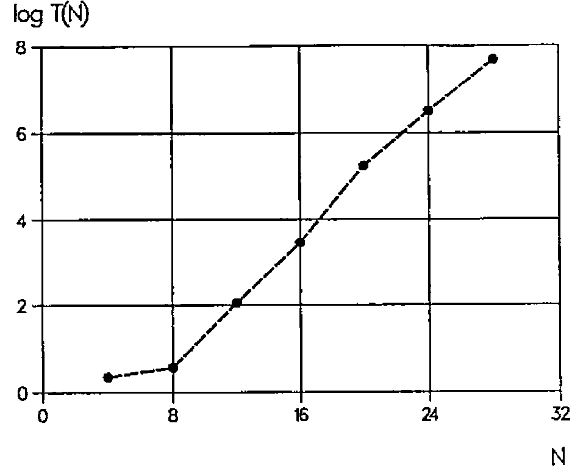

Armstrong Numbers and APL
Vector 14:3, page 138
Transcribed from the printed issue; not yet reviewed. Read it in the PDF of the issue, page 138
This paper originally appeared in BACUS 18.4, December 1996, reprinted by permission of the author
In a previous paper we treated niven numbers [1]. In this paper we treat armstrong numbers [2].
A positive integer or natural number I is an armstrong number if the sum of the Jth powers of its digits is equal to the original number, J being the number of its digits:
I = aJ + bJ + cJ …
For instance, the integer 153 is an armstrong number as 13+53+33 = 153. Starting with the armstrong number 1, let F(N) be the Nth armstrong number. Armstrong numbers F(N) for N = 1(1)28 are listed in Table 1.
As F(N) strongly increases with N, the frequency of the armstrong numbers strongly decreases when N increases. The nine digits 1 … 9 are armstrong numbers. There exists no armstrong number of two digits. And for J≥3, there exist at most two armstrong numbers; if I is an armstrong number, then I+1 is an armstrong number, if and only if the last digit of I is 0. Or, if I is an armstrong number, then I-1 is an armstrong number, if and only if the last digit of I is 1. Examples:
370, 371 and 24678050, 24678051
So far, however, no algorithm has been found to calculate F(N) directly from N. This means that, to calculate F(N), the sequence of positive integers or natural numbers 1, 2, 3,… has to be checked until N armstrong numbers have been found.
N F(N) N F(N) N F(N) N F(N)
1 1 8 8 15 8208 22 4210818
2 2 9 9 16 9474 23 9800817
3 3 10 153 17 54748 24 9926315
4 4 11 370 18 92727 25 24678050
5 5 12 371 19 93084 26 24678051
6 6 13 407 20 548834 27 88593477
7 7 14 1634 21 1741725 28 146511208
Table 1: F(N) for N = 1(1)28
Two APL user-defined functions ARMSTRONG1 and ARMSTRONG2 for calculating the sequence of armstrong numbers F(1), F(2), … F(N) are given below:
∇Z←ARMSTRONG1 N;I;J
[1] →(N≤0)/0,Z←⍳I←0
[2] LAB:J←⍴⍕I←I+1
[3] →(I≠+/((J⍴10)⊤I)*J)/LAB
[4] →(N>⍴Z←Z,I)/LAB
∇
∇Z←ARMSTRONG2 N;I;J
[1] →(N≤0)/0,Z←⍳I←0
[2] LAB:J←1+⌊10⍟I←I+1
[3] →(I≠+/((J⍴10)⊤I)*J)/LAB
[4] →(N>⍴Z←Z,I)/LAB
∇
ARMSTRONG1 16
1 2 3 4 5 6 7 8 9 153 370 371 407 1634 8208 9474
ARMSTRONG2 16
1 2 3 4 5 6 7 8 9 153 370 371 407 1634 8208 9474
In line [1] it is checked if N is negative or 0, a counter I is set to 0, and the explicit result Z is set to the empty vector ⍳0. In line [2], the counter I is increased by 1 and the number of digits J of I is evaluated. In line [3], using the function encode, the counter I is split into its digits and it is checked if the sum of the Jth powers of those digits is equal to I, in which case I is an armstrong number. Finally, in line [4], if the counter I is an armstrong number, Z is catenated with this counter, and the loop is closed when the shape of the explicit result Z is equal to N (or ⌈N). If N is negative or 0, the empty vector ⍳0 is returned. If N is positive, the vector of armstrong numbers F(1), F(2), … F(⌈N) is returned.
| N | ARMSTRONG1 | ARMSTRONG2 | ARMSTRONGA | ARMSTRONGB |
|---|---|---|---|---|
| 0 | 0.8 ms | 0.8 ms | 0.8 ms | 0.8 ms |
| 4 | 2.3 ms | 2.3 ms | 2.2 ms | 2.2 ms |
| 8 | 3.8 ms | 3.8 ms | 3.7 ms | 3.7 ms |
| 12 | 116.0 ms | 115.0 ms | 111.0 ms | 109.0 ms |
| 16 | 2.97 sec | 2.94 sec | 2.86 sec | 2.80 sec |
| 20 | 2.98 min | 2.91 min | 2.87 min | 2.77 min |
| 24 | 55.30 min | 54.00 min | 53.40 min | 51.70 min |
| 28 | average: about 13.5 hours |
Table 2: CPU times for N = 0(4)28
The difference between ARMSTRONG1 and ARMSTRONG2 lies in the program used to count the digits of I. In ARMSTRONG1 this is done by evaluating the shape of the format of I. In ARMSTRONG2 it is done by adding 1 to the floor of the common logarithm of I.
In ARMSTRONG1 and ARMSTRONG2, the count J of the digits of I and checking if I is an armstrong number is done in two separate lines, [2] and [3], for readability. Performance in CPU times may be improved slightly by substituting a one-liner for lines [2] and [3]. This is done in the user-defined functions ARMSTRONGA and ARMSTRONGB:
∇Z←ARMSTRONGA N;I;J
[1] →(N≤0)/0,Z←⍳I←0
[2] LAB:→(I≠+/((J⍴10)⊤I)*J←⍴⍕I←I+1)/LAB
[3] →(N>⍴Z←Z,I)/LAB
∇
∇Z←ARMSTRONGB N;I;J
[1] →(N≤0)/0,Z←⍳I←0
[2] LAB:→(I≠+/((J⍴10)⊤I)*J←1+⌊10⍟I←I+1)/LAB
[3] →(N>⍴Z←Z,I)/LAB
∇
ARMSTRONGA 16
1 2 3 4 5 6 7 8 9 153 370 371 407 1634 8208 9474
ARMSTRONGB 16
1 2 3 4 5 6 7 8 9 153 370 371 407 1634 8208 9474

Figure 1: log(T(N)-T(0)) versus log F(N) for N = 4(4)24
To compare the effectiveness of the user-defined functions shown, CPU times T(N) for N = 0(4)28 have been monitored. Results are reported in Table 2 (cf. also Figures 1 and 2).
Of course T(N) - T(0) is approximately proportional to F(N). Performance of ARMSTRONGB versus ARMSTRONG1 increases, for the domain investigated, from about 3% to 7% with N. Most importantly however, performance of the user-defined functions given is very poor and becomes impractical for even small values of N. Just as for the functions reported to calculate niven numbers, it would be a challenge to find an algorithm that drastically improves the performance of the functions to calculate the armstrong numbers.
The user-defined functions shown conform to the ISO Standard for APL [3]. Programming, calculations, and benchmarks have been done on a MicroLine Pentium-S 100, with Dyalog APL/W Version 7.1.2, under Windows 3.11 [4]. Benchmarks have been done using the system function ⎕MONITOR.

Figure 2: log T(N) versus N = 4(4)48
References¶
- J.De Kerf; Niven Numbers and APL; APL-CAM Journal, Vol. 18, No. 3, 16 September 1996, pp. 388-396
- D.D.Spencer; Computers in Number Theory; Computer Science Press, Rockville, Maryland, 1982, pp. 126-127
- International Standard ISO8485: 1989 (E), First Edition; 1989-11-01; Programming Languages - APL; International Organization for Standardization, Geneva, Switzerland, 1989.
- Dyalog APL/W Language Reference - Version 7; Dyadic Systems Ltd., Basingstoke, Hampshire, U.K., 1994.